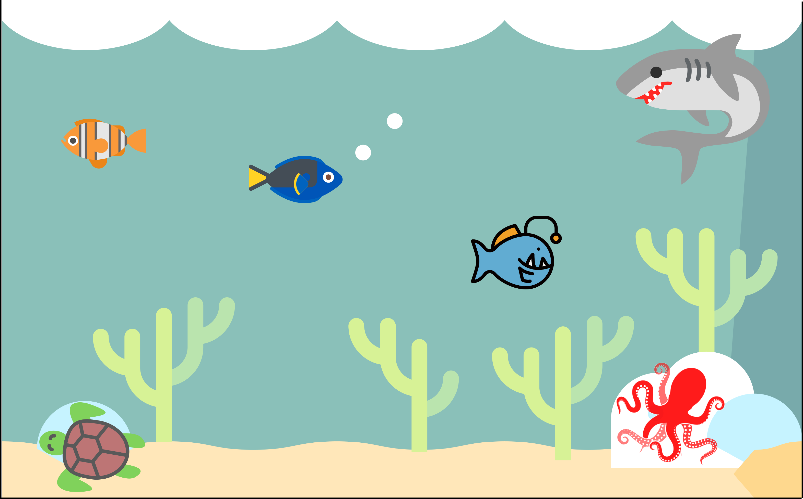

The Scientific publication system
» How it works
Scientific publication begin it’s journey 1660 with Philosophical Transactions of the Royal Society … (Contributions from Newton, Caroline Hershell - first woman)
I am not going into details, but the problematic is pretty well resumed in the folowing article:
» What is wrong
Monetisation of knowledge
for the benefits of Journals
You need to pay to publish (not always, OK, but most of the time)
You need to pay to have access to publications.
Of course those “fees” are not paid by scientist themseleves, but rather by their institutions or funding bodies.
to the detriment of Researchers
Interstingly, while I am writing those lines along with wrapping up my PhD thesis, I am not paid by my institution - Pretty cruel system don’t you think ?
Doesn’t really matt]er because we are passionate about what we do right ?
Well passion doesn’t bring food in the table.
Open Access
Yes, some journals offers Open Access, but very often it is a costly options as you need to pay Article Processing Charges (APC).
For Nature they cost 9500 Euros !! (source: Here)
Promote competition vs collaboration
Metrics
Scientist are judged by their number of publication to climb the accademic ladder. This is measured using metrics.
Hence we all tend to publish quick and numerous papers, rather than well and low number
» What is right
Peer Review
Journal template ?
Very often publishing fees are justified by the employment of an army of editors that needs to be paid by the journal. Now sit down and think about it, you are actually doing the editorial job by using the journal latex template!
Good and bad:
You know what you are going to get but:
prevent creativity in sharing scientific content.
Reproducibility crisis in Science.
Lots of redundancy
Experiments are not described efficiently in scientific papers and hence are hardly reproducible, especially when dealing with metastable samples (like ASW)
Processing softwares not always shared
Data in databases is not efficiently described and hard to extract, reprocess (give example)
Overall, Scientific work is published in a Boring way, even though every piece of Science is interesting.
» Summary
Outdated, current technologies should drive us to do better.
Tools
The journey towards the completion of a PhD is long, hard and students are very often left alone to develop their skills in order to become an accomplished researcher. There is an incentive from graduate schools within Universities to help their student cohort but unfortunately (at least for me), this always translated into a set of administrative burden that are conterproductive (cf Blog post on progress monitoring report). I think every student have their own needs and should be given the opportunity to developp their own set of tools to match those needs. For me that is:
Next level
» Research Toolbox
Build a single plateform of your own design (web-site) to manage, store and publish your research with
Jupyter-Book
Jupyter Book is one component of the [Jupyter ecocystem](link to teaching), an IDE for python. If you have no idea what this means, (), click on the link and have a read through the tutorial. In a nutshell, it is a collection of (Open source) softwares, that help you
build beautiful, publication-quality books and documents from computational content
Takes a collection of jupyter notebooks (.ipynb) and markdown files (.md), compile them to produce a static web-site
Result
This web-site is a Research compendium produced using Jupyter-Book. This book is part of the Science For the People project whose aim is to empower researcher to self-publish themselves in an open and innovative way, far from the unsustainable current publication system. This Book focus on my PhD project.
Blabla
Blabla
Benefits
A method to take, store and display my notes (informatically)
Implemented incrementally w/ JupyterLab Using Markdown and includes all the requirements of scientific publishing:
Bibliography
Figure referencing
…
and more:
Web-sites require a solid folder architecture.
data,
scripts
files
notes
Stored all in one place localy (Hardrive) and exported periodicly on Github
Keep track of my progress and focus on the right tasks.
Outil d’organisation
Using hypothesis (buttons on the right corner), the whole book content can be commented.
Share this notebook with my familly, friends and everyone else.
Findability, Accessibility, Interoperability and Reusability of my datasets.
Python Notebooks are available and others can interact with it via binder.
Connect Researcher with the general public. Collaboration beyond academia (utterance comment)
with my supervisors
Reviewers
members of the public
…
Other Online tools
For conducting research
Litterature Review
Research Management
Iterative documents build
Data Science Notes
Dialogue  -
- 
Alors certe, il y a probablement des outils plus efficaces et rapides sur le marche, mais j’aime faire l’apologie de la lenteur, d’autant plus qu’elle s’accompagne de nombreux benefices egalement …
» Editorial canvas
Sandbox - define term
For your Research ...
Write as you go along they said … It will be fun they said …
Markdown vs latex ?
One is relatively painfull and mostly serve the purpose of fitting within scientific journal edition templates. The other however, with the help of Jupyter Book gives you a serie of advantages shown below:
Benefits
Work is publishable as you go along (or not), and you can get feedback at every steps during your scientific journey, and that my friend is the best to learn and have a sain PhD journey.
Your are your own editor, you don’t have to obey any boring format. What we are doing as Researcher is great and exciting so ffs share it like that.
Choose your audience (multiple)
Overall,
... And all the other things orbiting around it!
Teaching material
This is a brief attempt to explain how Education works.
The body of the tree represent the education system. The trunk being the common set of knowledge that we are given in highschool (which is mandatory for all, as far as I know). The branches represent the University, and at that point the system diverge into different discipline, at bachelor level and subsequently when you get to do a Master. The leafs actually represent Researches that creates new knowledge
The orange leaf is my friend Ross, he is also studying the earliest stages of planet formation but he is a geologist (poor him I know)
Presentations / Posters
Put them online and give them a quick twist to fit a wider audience.
» Publication plateform
» Plateform for Collaboration
What I would like to explore is how we can bring researchers (from various disciplines) to work together on a given problematic, rather than competing with each other. I think that such a plateform can help in promoting this collaborative approach.
promote collaboration rather than competition
L’entraide pour rendre accessible du contenue educatif de pointe, de qualite et accessible a tous!
L’emploie du ton familier (universel).
You will have to put some efforts to make it work, but you will build a tool that can follow you during your whole career.
I think it is worth a try (link to jupyter-book tuto)
» Communication
Who are you ?
I aim to deliver content for everybody interested in Science, so let me know who you are and I will point you in the right direction.

Legend
 Anyone
Anyone
 Friends/Colleagues
Friends/Colleagues
 Teachers
Teachers
 Researchers (other fields)
Researchers (other fields)
 Researchers (my field)
Researchers (my field)
 Supervision team
Supervision team
» Sociale & politique

 Python
Python